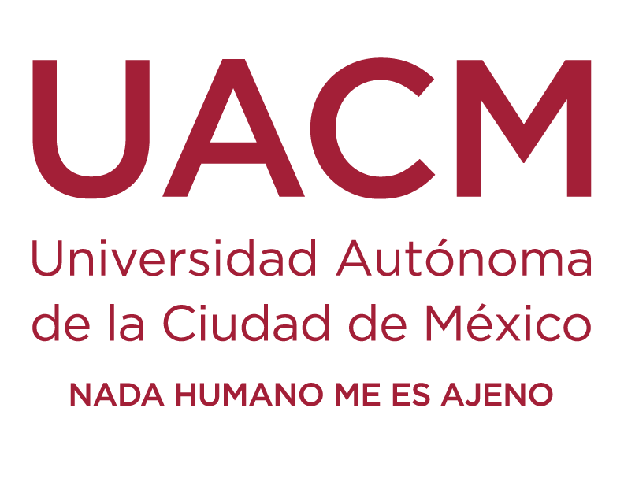
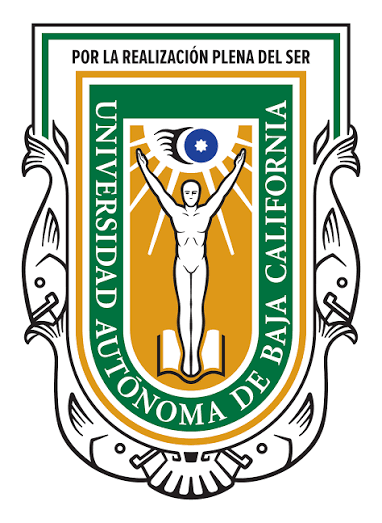
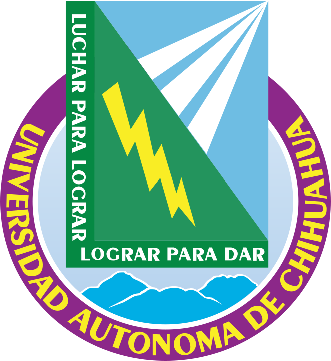
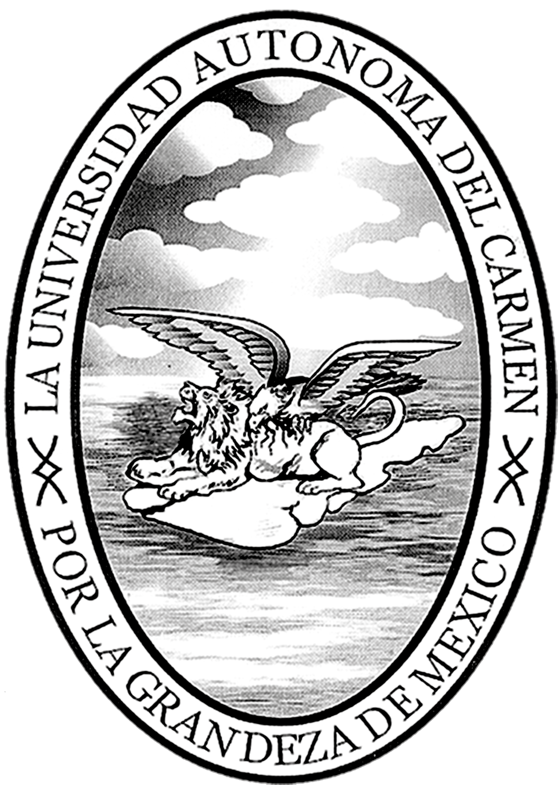

Hallazgos y Diagnóstico Transversal
Se identifican casos periodísticamente verificables en universidades de casi todos los estados, abarcando instituciones autónomas, estatales y tecnológicas descentralizadas.
Las destituciones y sanciones efectivas suceden mayoritariamente tras paros, tomas de instalaciones o "tendederos", no por iniciativa proactiva de los comités.
A pesar del alto volumen de quejas registradas, existe una marcada distancia entre las denuncias iniciadas y la imposición de sanciones definitivas.

UNAM
Universidad Nacional Autónoma de México
UAM
Universidad Autónoma Metropolitana

UACM
Univ. Autónoma de la Ciudad de México
UANL
Universidad Autónoma de Nuevo León
UdeG
Universidad de Guadalajara

BUAP
Benemérita Univ. Autónoma de Puebla

UV
Universidad Veracruzana

UAEMéx
Univ. Autónoma del Estado de México
UAEM (Morelos)
Univ. Autónoma del Estado de Morelos

UABC
Univ. Autónoma de Baja California

UAS
Universidad Autónoma de Sinaloa

UG
Universidad de Guanajuato
UADY
Universidad Autónoma de Yucatán
UNACH
Universidad Autónoma de Chiapas

UAQ
Universidad Autónoma de Querétaro

UABJO
Univ. Autónoma "Benito Juárez" de Oaxaca

UJAT
Universidad Juárez Autónoma de Tabasco

UASLP
Univ. Autónoma de San Luis Potosí

UACH
Universidad Autónoma de Chihuahua
UMSNH
Univ. Michoacana de San Nicolás de Hidalgo

UAdeC
Universidad Autónoma de Coahuila

UNISON
Universidad de Sonora
UAGro
Universidad Autónoma de Guerrero
UAA
Universidad Autónoma de Aguascalientes
UAZ
Universidad Autónoma de Zacatecas

UJED
Univ. Juárez del Estado de Durango

UAT
Universidad Autónoma de Tamaulipas
UAEH
Univ. Autónoma del Estado de Hidalgo

UATx
Universidad Autónoma de Tlaxcala
UAN
Universidad Autónoma de Nayarit

UACJ
Univ. Autónoma de Ciudad Juárez
UCOL
Universidad de Colima

UACAM
Universidad Autónoma de Campeche

UABCS
Univ. Autónoma de Baja California Sur

UNACAR
Universidad Autónoma del Carmen

UNICACH
Univ. de Ciencias y Artes de Chiapas

IPN
Instituto Politécnico Nacional (Dependiente SEP)

UQROO
Universidad de Quintana Roo

UNICH
Universidad Intercultural de Chiapas

ITSPR Poza Rica
Instituto Tecnológico Superior de Poza Rica

TecNM GAM II
TecNM Gustavo A. Madero II (CDMX)

UBBJ Papantla
Univ. Benito Juárez (Papantla, Ver.)
No se encontraron registros coincidentes
Intenta buscar por otro término o navega entre las categorías. Si deseas ingresar información sobre tu universidad para auditoría, contáctanos.
Aportar expediente al Archivo Vivo¿Tu universidad requiere actualización?
El Semáforo de la Simulación se alimenta de testimonios, expedientes de quejas, solicitudes de transparencia y análisis directo de asambleas estudiantiles. Envía la documentación de tu campus de manera segura.
Enviar datos al Archivo Vivo.